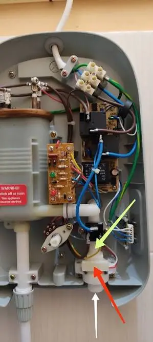
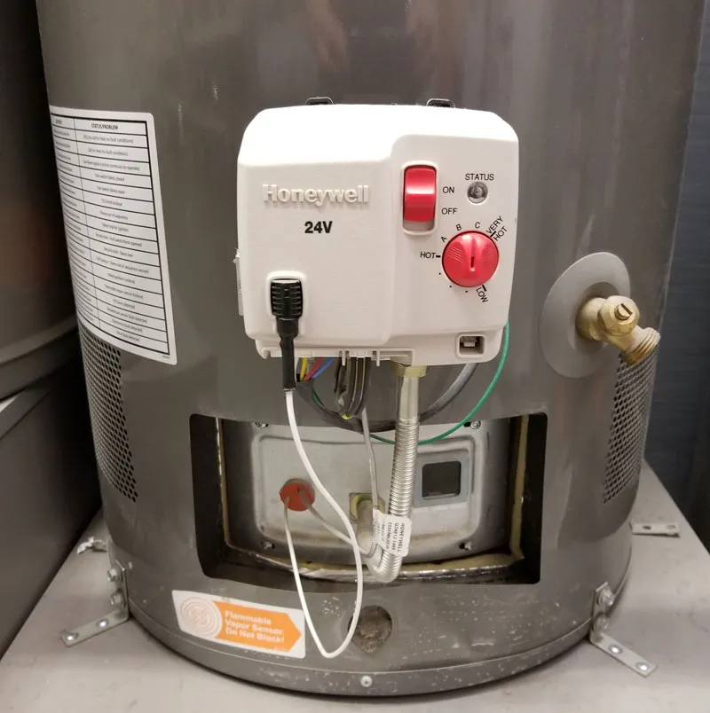
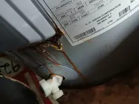

Common Causes of No Hot Water in Nampa
Gas Water Heaters
- Pilot Light Is Out — Often caused by a failed thermocouple, a draft blowing out the flame, or a gas supply interruption.
- Failed Thermocouple — This safety sensor cuts gas flow to the pilot when it can't detect a flame. When it wears out, it can cut gas even with a lit pilot.
- Gas Valve Failure — If the gas valve itself fails, no gas reaches the burner regardless of pilot status.
- Closed Gas Supply Valve — Sometimes simply closed accidentally during other home maintenance.
Electric Water Heaters
- Tripped Circuit Breaker — The water heater circuit may have tripped due to a failing element or wiring issue.
- Tripped High-Limit Safety Switch — A red reset button on the thermostat access panel trips when water gets too hot, cutting power to prevent scalding or tank damage.
- Failed Upper Heating Element — If the top element fails completely, you'll get no hot water at all (versus a failed lower element, which causes hot water to run out quickly).
- Failed Thermostat — A stuck or failed thermostat can prevent elements from engaging.

Safe Homeowner Diagnostic Checks
- Check the breaker panel for electric units — look for a tripped breaker labeled "water heater." Reset once; if it trips again, stop and call a professional.
- Check the gas supply valve for gas units — ensure the valve at the gas line is in the "on" (parallel to the pipe) position.
- Look for the pilot light through the viewing window on gas units — if it's out, follow the relighting instructions on the unit's label. If it won't stay lit, that points to a thermocouple issue.
- Check the high-limit reset button on electric units — located under the upper access panel, behind the insulation. If it's tripped, it will have popped out. Only reset once; repeated tripping means a professional diagnosis is needed.
- Verify the thermostat setting hasn't been accidentally changed or turned down.
When to Call a Professional Immediately
- The pilot light won't stay lit after attempting to relight it
- You smell gas near the unit — shut off the gas supply and call immediately
- The breaker trips again after one reset
- The high-limit switch trips repeatedly
- You've checked the basics above and still have no hot water
- The unit is more than 8–10 years old and showing other signs of wear
Cost Context for No-Hot-Water Repairs
| Likely Repair | Typical Cost Range |
|---|---|
| Thermocouple replacement | $150 – $250 |
| Gas valve replacement | $300 – $450 |
| Heating element replacement | $150 – $250 |
| Thermostat replacement | $130 – $230 |
| High-limit switch diagnosis & reset | $100 – $160 |


No Hot Water FAQs
Water heater repair costs in Nampa typically range from $150–$600. A no-hot-water diagnosis often reveals a thermocouple failure ($150–$250), a failed heating element ($150–$250), or a tripped breaker/reset switch (often a quick, low-cost fix once the root cause is found).
For gas water heaters, a failed thermocouple or pilot light issue is most common. For electric water heaters, a tripped high-limit switch or a failed upper heating element is most common. In Nampa, hard-water sediment buildup contributes to both types of failures over time.
Call a dedicated water heater specialist rather than a general plumber for faster, more accurate diagnosis. Nampa Water Heater Pros specializes exclusively in water heater repair, installation, and replacement throughout Nampa, ID.
Some basic checks are safe to do yourself: checking the breaker, checking the gas supply valve, and verifying the thermostat setting. However, diagnosing gas valve issues, thermocouple failures, or electrical element problems should be left to a licensed technician for safety and accuracy.